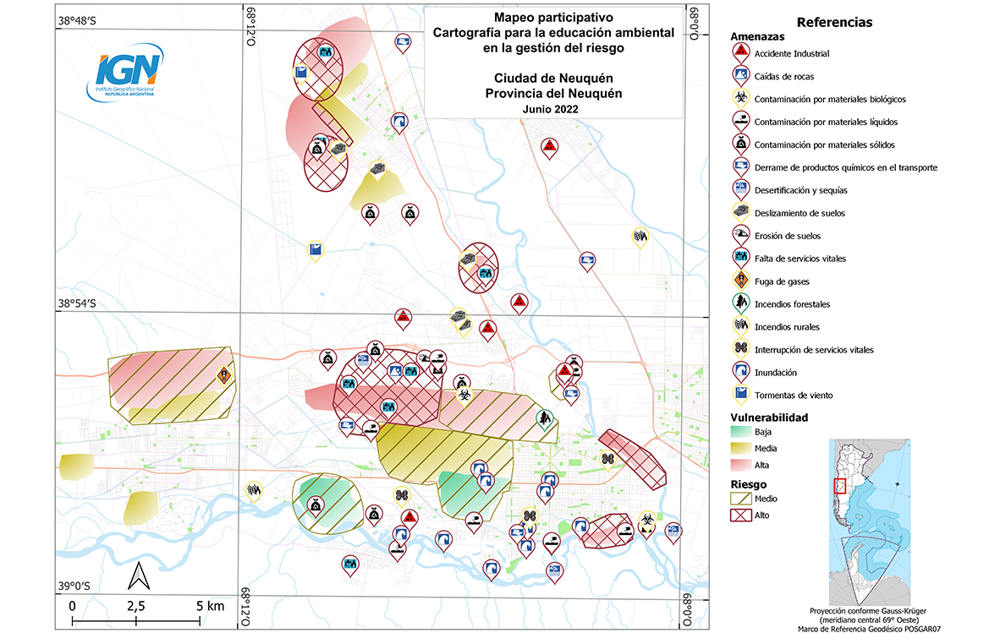

En esta sección se presenta una experiencia de transferencia a docentes de nivel primario y secundario que tiene como objetivo introducir conceptos básicos de cartografía e información geoespacial como herramientas para el conocimiento del territorio, con especial foco en la temática del riesgo de desastres.
El área de I+D del IGN se dedica, entre otros temas, a desarrollar proyectos sobre cartografía e información geoespacial como herramientas para la gestión integral del riesgo de desastres. Con el propósito de acercar a docentes estas herramientas, el IGN brindó talleres, en conjunto con la Secretaría de Estado de Planificación y Acción para el Desarrollo (COPADE) de la provincia del Neuquén, en cada una de las microrregiones de la provincia. Estas instancias fueron planeadas para introducir a un público principalmente docente, de todos los niveles de educación formal, herramientas metodológicas y prácticas, adaptadas para las diversas realidades educativas.
Desde el 2022 hasta el 2023 se han realizado 5 talleres en las localidades de la ciudad de Neuquén (microrregión de Confluencia con 107 asistentes), San Martín de los Andes (microrregión Sur con 53 asistentes), Chos Malal (microrregión Noroeste con 55 asistentes), Zapala (microrregión Centro con 68 asistentes) y Rincón de los Sauces (microrregión Este con 94 asistentes). El total de las personas participantes de estas localidades y zonas aledañas sumó a 377 participantes que lograron nutrirse de las temáticas previamente mencionadas.
La temática central del trabajo se origina en la pregunta fundamental: “¿Qué sabes del lugar donde habitas?” Esto permite identificar amenazas y vulnerabilidades a nivel provincial y local que sean significativas para todos las personas participantes involucradas.
Las y los docentes lograron manifestar espacialmente cómo perciben el riesgo de desastres en el área de estudio a escalas diversas, e incorporaron herramientas y conocimientos suficientes para trasladar la experiencia a sus estudiantes en las aulas.
La Cartografía Participativa (CP) es una línea de investigación de reciente incorporación en el IGN. En este caso en particular se aplica como una herramienta de trabajo en el aula, con el fin de introducir a las nuevas generaciones en el conocimiento del territorio y los problemas ambientales a partir del uso de cartografía digital y papel.
Asimismo, desde el IGN nos acercamos a la CP con el objetivo de acompañar el proceso de producción y publicación de la información resultante de diversas experiencias de mapeos participativos, y en un futuro comenzar a pensar de qué manera estos productos podrían fortalecer, complementar y enriquecer la información geoespacial oficial.
Para conocer más respecto a los análisis elaborados por cada experiencia, se los invita a descargar los resultados desagregados (en construcción):
El equipo se compone de personal técnico, investigadores/as y docentes pertenecientes a la Dirección de Planificación, Investigación y Desarrollo (IGN).
La metodología empleada en estos talleres se divide en tres etapas fundamentales:
A lo largo de todo el proyecto se utilizan técnicas de Cartografía Participativa (CP), entendiendo a la misma como un proceso de construcción de mapas donde se combina el conocimiento local con información y tecnología geográfica, pretendiendo generar mayor entendimiento en la relación que se construye entre una comunidad y su territorio. Tomando esto como eje, antes de dar inicio al taller, se ejecuta la fase inicial de este proceso donde se llevan a cabo una serie de actividades de planificación esenciales con el fin de alcanzar los objetivos previstos. Para eso, se elabora cartografía correspondiente a la localidad en dónde se desarrollará el taller, así como también se tienen en cuenta aquellas zonas aledañas de donde provienen los y las participantes. Cada mapa elaborado busca incorporar objetos geográficos que sean de interés para los y las participantes a fin de trabajar con la mayor cantidad de información posible.
La segunda etapa se desarrolla durante los talleres, en ellos se propone una secuencia didáctica que parte de una introducción sobre conceptos básicos de cartografía, riesgo de desastres y mapeo participativo con orientación a estudiantes de diferentes niveles educativos, estos son la base que guía la comprensión de la temática a abordar. Luego dicha secuencia pasa a niveles prácticos a fin de indagar de manera colaborativa sobre problemáticas que se presentan en el territorio que habitan. La propuesta de la actividad se basa en el conocimiento local y apunta a identificar en el mapa:
A partir de las cinco experiencias en los talleres, se avanzó hacia la tercera fase del proyecto: el procesamiento y análisis de los resultados obtenidos. Aunque la Cartografía Participativa (CP) brinda a los participantes la libertad de plasmar su percepción geográfica y social, su procesamiento requiere ciertas precauciones para evitar malinterpretaciones y la transformación de datos subjetivos y no verificados en conclusiones finales.
Con el propósito de superar estas dificultades, el equipo IGN llevó a cabo un conteo, categorización y clasificación de cada amenaza identificada en diferentes microrregiones. Luego de este proceso, surgieron los primeros resultados que demuestran la presencia de mayor o menor probabilidad de que ocurran eventos adversos o peligrosos, entendidos como amenazas.
De esta manera, se procedió a la asignación de ponderaciones a estos eventos, basándose en valores numéricos correspondientes a los niveles de peligrosidad atribuidos a cada evento: alto (15), medio (10), bajo (5) o ausencia de asignación (1). Este enfoque metodológico permite destacar de manera efectiva aquellas amenazas que son percibidas como las más devastadoras, recurrentes y con un impacto negativo significativo.
Esta etapa de procesamiento y análisis se traduce en la obtención de información más estructurada y cuantificable, permitiendo acercarse de manera más sólida, a través de este enfoque metodológico, a la realidad vivida y percibida por los participantes.
Al inicio de esta página se puede observar un mapa síntesis de la información recolectada en los cuatro primeros encuentros realizados, la subdivisión en microrregiones es propuesta por COPADE: ciudad de Neuquén (microrregión Confluencia) y las localidades de San Martín de los Andes (microrregión Sur), Chos Malal (microrregión Noroeste) y Zapala (microrregión centro).
Los resultados obtenidos responden a la percepción que tuvieron los y las participantes de las problemáticas que atraviesan en su vida cotidiana. Cabe aclarar que este resultado responde a la cuantificación de amenazas sin ponderar. Entre las posibles lecturas que ofrece la cartografía generada, se destaca que la microrregión sur es la que presenta mayor cantidad de amenazas percibidas de todos los tipos, en el total de los cuatro talleres; si bien internamente las de tipo geológicas y químicas son las preponderantes.
Por otra parte, las microrregiones de Confluencia y Noroeste tienen una presencia media de amenazas. Sin embargo, en Confluencia, donde se encuentra la capital provincial, las amenazas químicas tienen mayor relevancia mientras que en la zona montañosa del Noroeste son de tipo geológicas e hidrometeorológicas.
Este tipo de análisis por microrregión o por distribución de tipos de amenazas en el territorio, son algunas posibilidades de interpretación de resultados que permiten comprender los imaginarios de la población local, a ello se podría sumar una validación de datos que permitan contrastar y evaluar las necesidades de quienes habitan el territorio.
Una vez que la metodología de mapeo y los conceptos de amenaza se ven aplicados a escala provincial, se repite la metodología de peligros y se avanza a identificar niveles y sectores con diversas formas de vulnerabilidad. Luego de que el mapa refleja ambos aspectos del riesgo, se lleva a cabo una superposición de información para alcanzar el objetivo final de delinear áreas de riesgo y fundamentar esta demarcación en función de la gravedad de sus componentes.
A continuación, se presenta un mapa a escala local de la ciudad de Neuquén realizado durante la experiencia de junio 2022, en el cual se digitalizaron las amenazas percibidas por la comunidad junto con su nivel de peligrosidad, las áreas vulnerables clasificadas en niveles bajo, medio y alto, y por último, el riesgo resultante.
